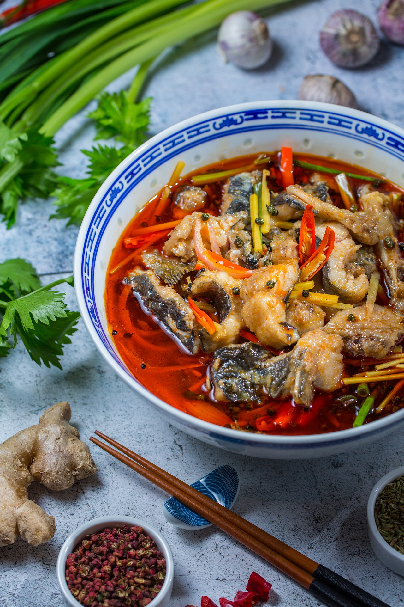
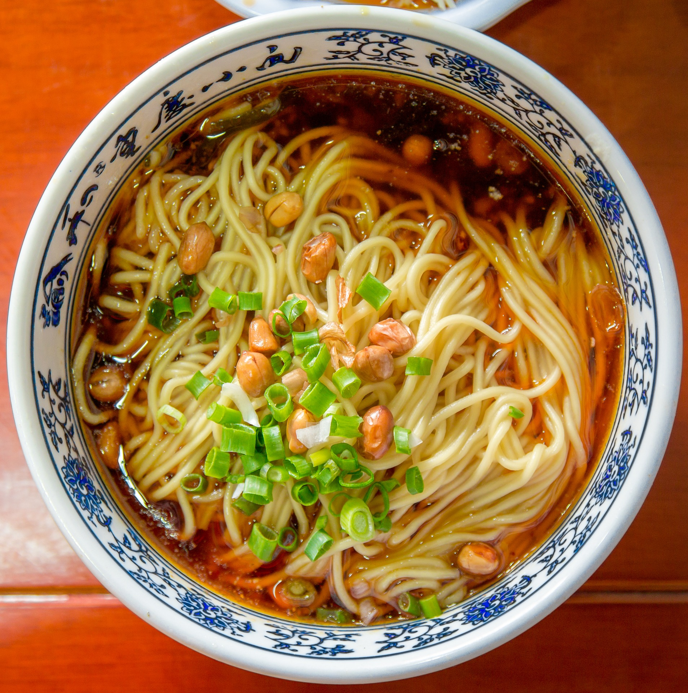
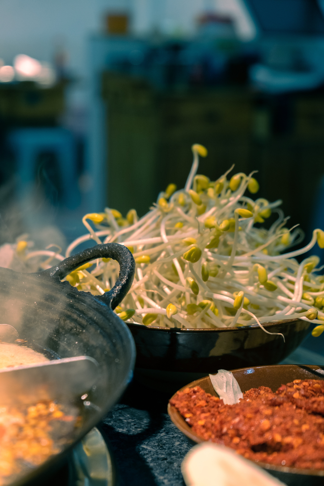

Chongqing-köket kännetecknas av distinkt smak, ordnad prioritet och ordning, och fokuserar på kryddig, fräsch, öm och varm. Den förändras och används, och stilen med hundratals rätter och smaker är allmänt älskad av allmänheten. Föregångaren av Chongqing-köket kan spåras tillbaka till antiken, men särskilt under motståndskriget på 1930-talet var Chongqing huvudstad i Kina under kriget, landets centrum och Asiens centrum. Ett stort antal regering och affärsmän strömmade in i Chongqing. Samtidigt fanns en grupp kockar med enastående färdigheter. Dessa kockar tog inte bara med sina egna specialrätter utan genomförde också djärva reformer av de lokala folkanpassade rätterna och fick dem att visas i den eleganta salen. Chongqing-köket är baserat på detta lokala kök, absorberar olika matlagningstekniker och utvecklas gradvis för att bilda ett kök som representerar lokala egenskaper.



Chongqing-nudlar är en av de fyra huvudsakliga egenskaperna hos Chongqing. Den typ av nudlar som tillhör Chongqing har sitt ursprung i Chongqing och är en av Chongqings basfoder, särskilt frukost. Chongqing-nudlar är den enklaste typen av Chongqing-nudlar. Chongqing-nudlar hänvisar till kryddiga nudlar, en kryddig smakstyp. Chongqing-nudlar inkluderar även Chongqing-nudlar och nudlar med brända frön, såsom nötkött, feta tarmar, diverse ärtnudlar från ärtor. Smaktillsatser är själen hos små nudlar i Chongqing. En skål med nudlar beror på kryddorna för att förbättra smaken. Justera kryddan först och tillsätt sedan de kokta nudlarna. Den kryddiga och kryddiga smaken är harmoniserad och inte irriterande, nudlarna är fasta och släta, soppan är doftande och stark. Chongqing-nudlar är traditionella nudlar som allmänt accepteras av Chongqing-medborgare som sydlänningar. På grund av sin unika smak är den känd för sin kryddighet och har varit känd i hela landet under senare år.I Chongqing är den hetaste krukan den mest kända, och den är också en välkänd specialmat i hela landet och lockar många utlänningar till Chongqing. Det finns också många typer av varmgryta, såsom anka tarmgryta, fiskgryta och så vidare. Ett bord med människor samlades runt den glödheta potten och äter glatt, nötkött, köttskivor, anka tarmar, ål, bönspiror, laga vad du vill och du kan känna det frestande när du går på vägen och passerar dörren till butiken. doft.